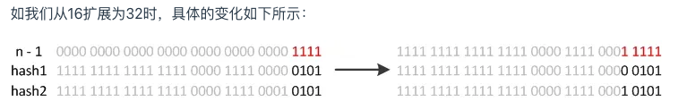
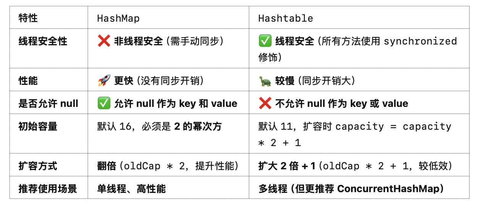

Java集合
Map
HashMap
如何对 Map 中的元素进行遍历呢？你能想到几种方法
-
我们可以使用
for-each循环和entrySet()方法这个方法的优点就是可以获得
Map中的entry，可以同时获得key和value -
如果我们想只要
key的话，就可以只用for-each和keySet()方法 -
如果我们只想要
value的话，就可以只用for-each和values()方法 -
我们可以使用迭代器
Iterator和entrySet()方法 -
使用
Lambda表达式和foreach方法 -
使用流来进行遍历
下面是我们的遍历方法
1 2 3 4 5 6 7 8 9 10 11 12 13 14 15 16 17 18 19 20 21 22 23 24 25 26 27 28 29 30 31 | |
请简单的介绍一下HashMap的工作原理
具体的源码分析可以看我的另一篇文章HashMap源码分析
首先，我们知道 HashMap 是 Java的Map的一个实现类。其中的实现是依托于数组和链表的。因为是 HashMap 所以我们想要查找的时间复杂度做到 O(1) 因此采用了数组来作为buckets 桶。然后我们处理哈希冲突的办法是 拉链法，也就是说如果发生了哈希冲突，我们就将这个元素放到链表的下一个位置。因此我们数组的元素类型是一个 Node<K,V>。但是我们知道，如果当冲突的元素比较多的时候，还采用链表的话，查找的时间复杂度就会变成了O(N)
因此我们先查看数组是否需要扩容<64，当容量小于等于 64 的时候，我们优先选择扩容，其次再进行切换成红黑树。
然后值得注意的是，如果当某个桶的容量小于6的时候，红黑树会退化成链表。
HashMap 是线程安全的吗？
不是线程安全的，我们在实现的过程中没有使用到Synchornized关键字，因此在多线程的情况下，可能会出现ConcurrentModificationException异常。
但是如果需要线程安全的话，可以使用ConcurrentHashMap，它是线程安全的。
所以顺带提一句，HashMap的get()方法一定安全吗
- 线程不安全
get(null)是安全的，前提是初始化过了，否则会抛出NullPointerException
能不能简单的介绍一下 HashMap 的 put 方法呢？
我们的 put 方法是将元素放入HashMap 的方法。但是它只是一个暴露在外面的方法，真正实现的
方法其实是putVal。首先我们会查看HashMap中是否有初始化，如果没有初始化的话，我们会进行初始化，也就是
扩容操作。然后就可以直接的插入元素了。但是如果已经初始化过了。我们就会利用index = (n - 1) & hash来计算出它的索引值
然后我们就可以直接的插入元素了。
如果我们找到了一样的key,那么就可以直接的进行覆盖，并且返回旧的value。
倘若没有找到一样的，就先利用 拉链法 来处理哈希冲突，同时维护链表的节点数。如果节点数大于8
那么我们就会切换成红黑树。先将链表中的元素转化为红黑树，然后再进行插入，如果它本身就已经是红黑树了，那么就直接插入。
同时不要忘记了，还要检查负载因子是否大于0.75
为什么 HashMap 的Key值要选取String呢？
我们回归本质，因为String对象是不可变的，而这正好是符合HashMap的要求的。因为HashMap的key是不可变的，如果我们的key是可变的话，那么就会出现问题。因为我们的key是通过hashCode()方法来计算的，如果我们的key是可变的话，那么我们的hashCode就会发生变化，那么我们就找不到这个元素了。
也就是说其实是要保证 Map的稳定性。
为什么 HashMap 的容量一定要是 2 的幂次方呢？
为了提高计算效率。因为 Hash值的计算会涉及到位运算，而位运算的效率是非常高的。这样就可以比较高效的找到对应的桶
如果我们的HashMap往其中放了20个元素，那么我们需要扩容几次呢？
这里就要看 HashMap 中的默认值了。因为 20 肯定会小于数组的长度 64,所以不用考虑会因为
哈希冲突过多导致的切换红黑树。我们只需要考虑负载因子的问题。默认的负载因子是 0.75，也就是说当我们的元素个数大于 16 * 0.75 = 12 的时候，就会进行扩容。所以我们只需要扩容一次。
变成32的数组长度，32*0.75=24，所以我们极端情况只需要扩容一次。
HashMap 中为什么要使用红黑树，而不是效率更高的 AVL 树呢？
因为 AVL 虽然查询效率比红黑树高，但是它的缺点就是过于古板，也就是说要满足 AVL 的要求是比比较高的。
但是红黑树属于 弱平衡树，不会像 AVL 那样严格，而连锁导致的可能导致的不停进行的左旋和右旋操作。
HashMap 中重写的 hashCode() 和 equals() 方法的作用是什么？有什么需要注意的事项？
其实问的就是为什么还要重写？
因为可能会存在两个不同的key通过hashCode()方法计算出来的值是一样的，这就是所谓的哈希冲突。所以我们需要重写hashCode()和equals()方法来保证我们的key是唯一的。
1 2 3 4 5 6 7 8 9 10 11 12 13 14 15 | |
我们这里的hashcode 为了避免出现上述情况，选择了将key和value再进行了一次异或操作。这样还能重复的概率是极低的。
而equals方法则是判断两个对象是否相等，如果相等的话，就返回true，否则返回false。要进行的是深度比较。
说说 HashMap 中的扩容机制
主要就是分为两步:
- 加倍数组的长度
- 将旧Hash值放入新的Hash表中
当我们扩容的时候，HashMap的容量是2的幂次方的优势就体现出来了。我们首先了解
index = (n-1) & hash

下面就是例子，可能会原地不动，或者前进2的幂次
这样可以保证我们的性能最大化，尽可能的进行位运算。
HashMap 和 HashTable 的区别
